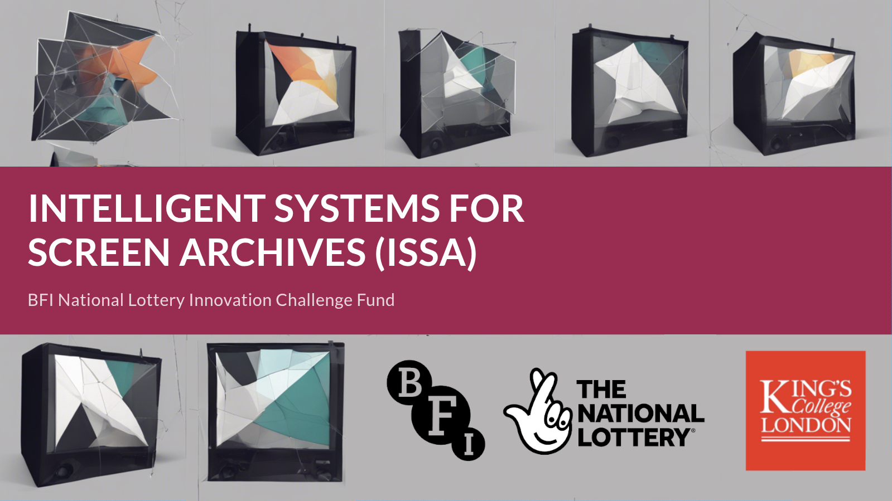
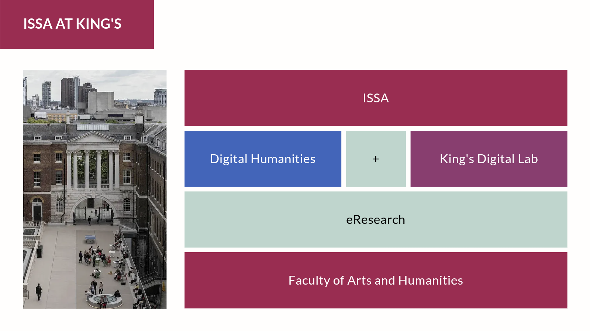
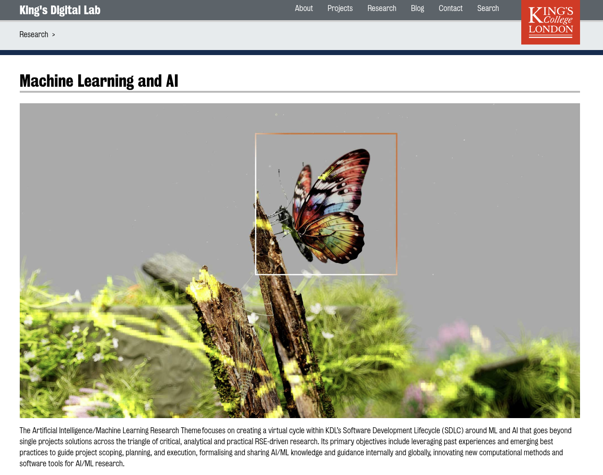
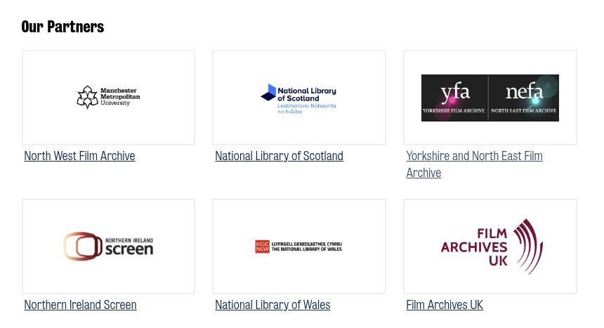
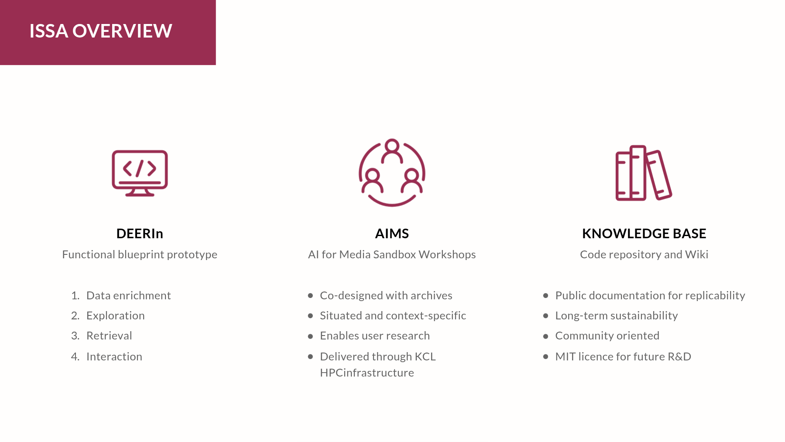
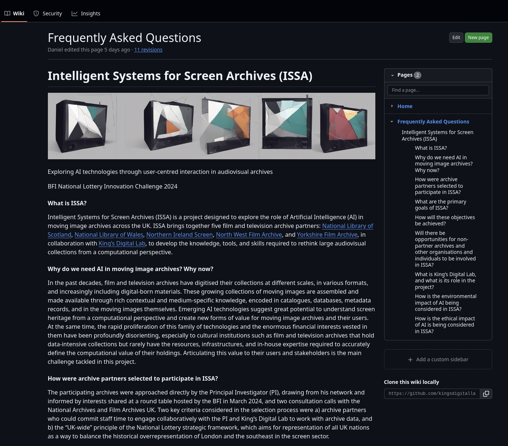
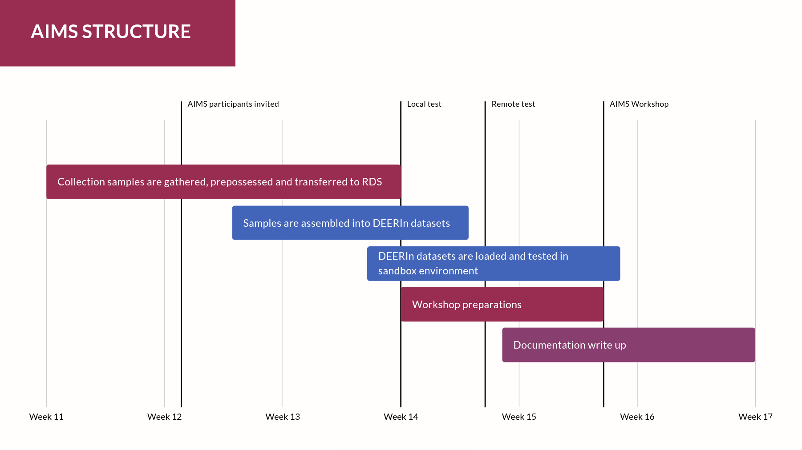

<!DOCTYPE html>
<html lang="en">
  <head>
    <meta charset="utf-8" />
    <meta name="viewport" content="width=device-width, initial-scale=1.0, maximum-scale=1.0, user-scalable=no" />

    <title>ISSA-1</title>
    <link rel="stylesheet" href="dist/reveal.css" />
    <link rel="stylesheet" href="dist/theme/black.css" id="theme" />
    <link rel="stylesheet" href="plugin/highlight/zenburn.css" />
	<link rel="stylesheet" href="css/layout.css" />
	<link rel="stylesheet" href="plugin/customcontrols/style.css">


    <script defer src="dist/fontawesome/all.min.js"></script>

	<script type="text/javascript">
		var forgetPop = true;
		function onPopState(event) {
			if(forgetPop){
				forgetPop = false;
			} else {
				parent.postMessage(event.target.location.href, "app://obsidian.md");
			}
        }
		window.onpopstate = onPopState;
		window.onmessage = event => {
			if(event.data == "reload"){
				window.document.location.reload();
			}
			forgetPop = true;
		}

		function fitElements(){
			const itemsToFit = document.getElementsByClassName('fitText');
			for (const item in itemsToFit) {
				if (Object.hasOwnProperty.call(itemsToFit, item)) {
					var element = itemsToFit[item];
					fitElement(element,1, 1000);
					element.classList.remove('fitText');
				}
			}
		}

		function fitElement(element, start, end){

			let size = (end + start) / 2;
			element.style.fontSize = `${size}px`;

			if(Math.abs(start - end) < 1){
				while(element.scrollHeight > element.offsetHeight){
					size--;
					element.style.fontSize = `${size}px`;
				}
				return;
			}

			if(element.scrollHeight > element.offsetHeight){
				fitElement(element, start, size);
			} else {
				fitElement(element, size, end);
			}		
		}


		document.onreadystatechange = () => {
			fitElements();
			if (document.readyState === 'complete') {
				if (window.location.href.indexOf("?export") != -1){
					parent.postMessage(event.target.location.href, "app://obsidian.md");
				}
				if (window.location.href.indexOf("print-pdf") != -1){
					let stateCheck = setInterval(() => {
						clearInterval(stateCheck);
						window.print();
					}, 250);
				}
			}
	};


        </script>
  </head>
  <body>
    <div class="reveal">
      <div class="slides"><section  data-markdown><script type="text/template"><!-- .slide: class="drop" -->
<div class="" style="position: absolute; left: 0px; top: 0px; height: 1200px; width: 1920px; min-height: 1200px; display: flex; flex-direction: column; align-items: center; justify-content: center" absolute="true">




## First partner meeting, February 2025
</div></script></section><section  data-markdown><script type="text/template"><!-- .slide: class="has-dark-background drop" data-background-color="#2b1804" -->
<div class="" style="position: absolute; left: 0px; top: 0px; height: 1200px; width: 1920px; min-height: 1200px; display: flex; flex-direction: column; align-items: center; justify-content: center" absolute="true">

<div class="callout callout-color8">
<div class="callout-title">
<div class="callout-icon">

<i class="fas fa-list" ></i>


</div>
<div class="callout-title-inner">

Agenda

</div>
</div>
<div class="callout-content">

1. Welcome & introductions

2. Project refresher

3. Timeline & archives involvement

4. AIMS Workshops

5. Next steps and communication channels

6. Q&A

</div>
</div>
</div>

<aside class="notes"><p>The objective of this first meeting is to introduce partners, remind them about the project, going over next steps, and answering any questions.</p>
</aside></script></section><section  data-markdown><script type="text/template"><!-- .slide: class="has-dark-background drop" data-background-color="#992d51" -->
<div class="" style="position: absolute; left: 0px; top: 0px; height: 1200px; width: 1920px; min-height: 1200px; display: flex; flex-direction: column; align-items: center; justify-content: center" absolute="true">

<i class="fas fa-handshake fa-5x" color="#b5788d"></i>


# 1. Welcome & introductions
</div></script></section><section  data-markdown><script type="text/template"><!-- .slide: class="drop" -->
<div class="" style="position: absolute; left: 0px; top: 0px; height: 1200px; width: 1920px; min-height: 1200px; display: flex; flex-direction: column; align-items: center; justify-content: center" absolute="true">

<div class="callout callout-color1">
<div class="callout-title">
<div class="callout-icon">

<i class="fas fa-info-circle" ></i>


</div>
<div class="callout-title-inner">

Welcome to ISSA!

</div>
</div>
<div class="callout-content">

- [Daniel Chávez Heras](https://movingpixel.net/), PI, King's College London

- Anna Casey, Innovation Challenge Fund Manager, BFI

- Geoffroy Noel, Senior Research Software Engineer, King's Digital Lab

</div>
</div>
</div>

<aside class="notes"><p>Follow the slides online and live links.</p>
</aside></script></section><section  data-markdown><script type="text/template"><!-- .slide: class="has-light-background drop" data-background-color="#f4f4f4" -->
<div class="" style="position: absolute; left: 0px; top: 0px; height: 1200px; width: 1920px; min-height: 1200px; display: flex; flex-direction: column; align-items: center; justify-content: center" absolute="true">


</div>

<aside class="notes"><p>Anna Casey</p>
</aside></script></section><section  data-markdown><script type="text/template"><!-- .slide: class="has-light-background drop" data-background-color="#f4f4f4" -->
<div class="" style="position: absolute; left: 0px; top: 0px; height: 1200px; width: 1920px; min-height: 1200px; display: flex; flex-direction: column; align-items: center; justify-content: center" absolute="true">


</div>

<aside class="notes"><p>Introduce Digital Humanities, e-Research, and King&#39;s Digital Lab</p>
<p>The <a href="https://www.kcl.ac.uk/ddh">Department of Digital Humanities</a> at King&#39;s College London is the largest and oldest of its kind worldwide, it is internationally recognised for producing leading research into the 
applications and implications of technology on contemporary society, including a track record of interdisciplinary projects for the understanding of culture through advanced computational methods.</p>
</aside></script></section><section  data-markdown><script type="text/template"><!-- .slide: class="has-light-background drop" data-background-color="#f4f4f4" -->
<div class="" style="position: absolute; left: 0px; top: 0px; height: 1200px; width: 1920px; min-height: 1200px; display: flex; flex-direction: column; align-items: center; justify-content: center" absolute="true">


</div>

<aside class="notes"><p>Geoffroy Noel</p>
<p>King’s Digital Lab (KDL) is a Research Software Engineering (RSE) team in King’s College London, based in the Faculty of Arts &amp; Humanities. The lab manages over 100 Digital Humanities projects collected over the past two decades and has a portfolio of approximately twenty projects in active development and over sixty projects in various post-funding states. KDL engages widely with other higher education institutions, with libraries, museums, and cultural heritage bodies, and with the performing arts and creative industries sector. The lab works in various areas, including, Digital Creativity, AI and Machine Learning, and Indigenous Digital Humanities. </p>
<p>The role of KDL is to design and deliver the core research and development provision for the ISSA, including applied expertise in machine learning in cultural domains. Learn more about King’s Digital Lab by browsing some of its <a href="https://kdl.kcl.ac.uk/projects/">recent projects</a>.</p>
</aside></script></section><section  data-markdown><script type="text/template"><!-- .slide: class="drop" -->
<div class="" style="position: absolute; left: 0px; top: 0px; height: 1200px; width: 1920px; min-height: 1200px; display: flex; flex-direction: column; align-items: center; justify-content: center" absolute="true">




<div class="callout callout-color1">
<div class="callout-title">
<div class="callout-icon">

<i class="fas fa-info-circle" ></i>


</div>
<div class="callout-title-inner">

ISSA partners 

</div>
</div>
<div class="callout-content">

- [North West Film Archive](https://kcl-research.worktribe.com/record.jx?recordid=3782417)

- [National Library of Scotland](https://kcl-research.worktribe.com/record.jx?recordid=3392648)

- [Yorkshire Film Archive](https://kcl-research.worktribe.com/record.jx?recordid=3398513)

- [Northern Ireland Screen Commission](https://kcl-research.worktribe.com/record.jx?recordid=3398515)

- [National Library of Wales](https://kcl-research.worktribe.com/record.jx?recordid=3398549)

- [Film Archives UK](https://kcl-research.worktribe.com/record.jx?recordid=3782422) (convening partner)

</div>
</div>
</div>

<aside class="notes"><ul>
<li><a href="https://kcl-research.worktribe.com/record.jx?recordid=3782417">North West Film Archive</a> - <a href="https://kcl-research.worktribe.com/record.jx?recordid=3392648">National Library of Scotland</a></li>
<li><a href="https://kcl-research.worktribe.com/record.jx?recordid=3398513">Yorkshire Film Archive</a></li>
<li><a href="https://kcl-research.worktribe.com/record.jx?recordid=3398515">Northern Ireland Screen Commission</a></li>
<li><a href="https://kcl-research.worktribe.com/record.jx?recordid=3398549">National Library of Wales</a></li>
<li><a href="https://kcl-research.worktribe.com/record.jx?recordid=3782422">Film Archives UK</a> (convening partner)</li>
</ul>
</aside></script></section><section  data-markdown><script type="text/template"><!-- .slide: class="has-dark-background drop" data-background-color="#992d51" -->
<div class="" style="position: absolute; left: 0px; top: 0px; height: 1200px; width: 1920px; min-height: 1200px; display: flex; flex-direction: column; align-items: center; justify-content: center" absolute="true">

<i class="fas fa-cubes fa-5x" color="#b5788d"></i>


# 2. Project refresher
</div></script></section><section  data-markdown><script type="text/template"><!-- .slide: class="has-light-background drop" data-background-color="#f4f4f4" -->
<div class="" style="position: absolute; left: 0px; top: 0px; height: 1200px; width: 1920px; min-height: 1200px; display: flex; flex-direction: column; align-items: center; justify-content: center" absolute="true">


</div>

<aside class="notes"><h3 id="aims-and-objectives">Aims and objectives</h3>
<p>ISSA aims to build sector-wide understanding about AI technologies that is relevant for intended users of moving image archives and adds public value to their cultural offer. This will be achieved through the following specific objectives: </p>
<ol>
<li>Develop a prototype for creative experimentation with moving image collections, including modules for data enrichment, exploration, retrieval, and interaction (DEERIN); </li>
<li>Co-design of situated experimentation workshops delivered through a format called AI for Media Sandbox (AIMS); </li>
<li>Create a publicly accessible code repository and knowledge base for archives to document these experiments and share tools, knowledge and best practice that arises from them; and </li>
<li>Document requirements and sector gaps that can be used to attract future funding and inform strategic decisions about AI in moving image archives.</li>
</ol>
<h3 id="approach">Approach</h3>
<p>ISSA adopts a human-centred design approach to technology development. In practice, this means prioritising the needs, preferences and expectations of end-users and stake holders, such as archivists, curators, and the different publics who engage with audiovisual collections. The goal is not to suggest technical fixes to existing archiving and preservation challenges, but to collectively rethink the archive and its practices from a computational perspective.</p>
</aside></script></section><section  data-markdown><script type="text/template"><!-- .slide: class="drop" -->
<div class="" style="position: absolute; left: 0px; top: 0px; height: 1200px; width: 1920px; min-height: 1200px; display: flex; flex-direction: column; align-items: center; justify-content: center" absolute="true">

<div class="" style="position: absolute; left: 10%; top: 20%; height: 60%; width: 80%; display: flex; flex-direction: column; align-items: center; justify-content: center" >

<div class="callout callout-color1">
<div class="callout-title">
<div class="callout-icon">

<i class="fas fa-info-circle" ></i>


</div>
<div class="callout-title-inner">

DEERIn 

</div>
</div>
<div class="callout-content">

It is not a finished product or service, **it is a tool for research and a technical blueprint for guided experimentation**. We will not address every aspect of archival practice. We will not train new models from scratch. **We will enable archives to experiment with existing state of the art open-source models in their own collections and contexts**, and support them to build the knowledge and evidence to decide if and how to use or develop AI products and services.

</div>
</div>
</div>
</div></script></section><section  data-markdown><script type="text/template"><!-- .slide: class="drop" -->
<div class="" style="position: absolute; left: 0px; top: 0px; height: 1200px; width: 1920px; min-height: 1200px; display: flex; flex-direction: column; align-items: center; justify-content: center" absolute="true">

<div class="" style="position: absolute; left: 10%; top: 20%; height: 60%; width: 80%; display: flex; flex-direction: column; align-items: center; justify-content: center" >

<div class="callout callout-color8">
<div class="callout-title">
<div class="callout-icon">

<i class="fas fa-list" ></i>


</div>
<div class="callout-title-inner">

DEERIn examples

</div>
</div>
<div class="callout-content">

1. **Data enrichment**: automated captioning and metadata generation using large language and visual models (LLMs and LVMs)

2. **Exploration**: Moving image collection navigation and visualisation through projection and clustering techniques (t-SNE UMAP)

3. **Retrieval**: New techniques for retrieval and discovery through implementations of retrieval augmented generation (RAG and GraphRAG)

4. **Interaction**: Bootstrapping data-driven interactive applications for creative exploration and reuse of collections, such as AI-assisted editing or generative retrieval (see for example [playphrase.me](https://www.playphrase.me/)).

</div>
</div>
</div>
</div>

<aside class="notes"><p>The proposed DEERIN prototype will be designed as a modular system, using state-of-the-art open-source libraries and models, to provide a functional blueprint of how to enrich, explore and interact with a large collection of moving images.</p>
<p>DEERIn is not a finished product or service, it is a tool for research and a technical blueprint for guided experimentation. We will not address every aspect of archival practice. We will not train new models from scratch. We will enable archives to experiment with existing state of the art open-source models in their own collections and contexts, to build the knowledge and evidence to decide if and how to use and develop AI products and services.</p>
<p>The complementary AIMS workshops are designed to situate the prototype in different contexts, with budgeted time and resources to identify, sample and reshape collection asynchronously, and focus on creative experimentation and discussion in person.</p>
</aside></script></section><section  data-markdown><script type="text/template"><!-- .slide: class="drop" -->
<div class="" style="position: absolute; left: 0px; top: 0px; height: 1200px; width: 1920px; min-height: 1200px; display: flex; flex-direction: column; align-items: center; justify-content: center" absolute="true">

<div class="" style="position: absolute; left: 10%; top: 20%; height: 60%; width: 80%; display: flex; flex-direction: column; align-items: center; justify-content: center" >

<div class="callout callout-color1">
<div class="callout-title">
<div class="callout-icon">

<i class="fas fa-info-circle" ></i>


</div>
<div class="callout-title-inner">

AI for Media Sandbox (AIMS) 

</div>
</div>
<div class="callout-content">

AIMS is a six week collaborative design sprint, co-designed with each archive partner, leading to a 1-2 day practical experimentation workshop. The sprint involves:

1. Deciding on the areas from DEERIn most relevant to each archive

2. Locating suitable data samples from the archive's collections

3. Preparing these data samples according to pre-agreed template

4. Making these samples available to KDL in advance for testing

5. Convening the situated in-person session for live experimentation

</div>

</div>
</div>
</div></script></section><section  data-markdown><script type="text/template"><!-- .slide: class="drop" -->
<div class="" style="position: absolute; left: 0px; top: 0px; height: 1200px; width: 1920px; min-height: 1200px; display: flex; flex-direction: column; align-items: center; justify-content: center" absolute="true">


[BFI press release](https://core-cms.bfi.org.uk/media/39909/download "https://core-cms.bfi.org.uk/media/39909/download")  ·  [ISSA website](https://www.kcl.ac.uk/research/issa "https://www.kcl.ac.uk/research/issa")
</div></script></section><section  data-markdown><script type="text/template"><!-- .slide: class="drop" -->
<div class="" style="position: absolute; left: 0px; top: 0px; height: 1200px; width: 1920px; min-height: 1200px; display: flex; flex-direction: column; align-items: center; justify-content: center" absolute="true">



[ISSA code repository and WIKI](https://github.com/kingsdigitallab/issa/wiki/Frequently-Asked-Questions)
</div></script></section><section  data-markdown><script type="text/template"><!-- .slide: class="has-dark-background drop" data-background-color="#992d51" -->
<div class="" style="position: absolute; left: 0px; top: 0px; height: 1200px; width: 1920px; min-height: 1200px; display: flex; flex-direction: column; align-items: center; justify-content: center" absolute="true">

<i class="fas fa-project-diagram fa-5x" color="#b5788d"></i>


# 3. Timeline & archives involvement
</div></script></section><section  data-markdown><script type="text/template"><!-- .slide: class="has-light-background drop" data-background-color="#f4f4f4" -->
<div class="" style="position: absolute; left: 0px; top: 0px; height: 1200px; width: 1920px; min-height: 1200px; display: flex; flex-direction: column; align-items: center; justify-content: center" absolute="true">


</div>

<aside class="notes"><h2 id="milestones-and-weekly-breakdown-first-phase">Milestones and weekly breakdown (first phase)</h2>
<ul>
<li><p>Soft launch and partner engagement [15 January – 28 February 2025] </p>
<ul>
<li>Initial engagement with archive partners and stakeholders <ul>
<li>Project website and FAQs </li>
<li>Sot launch webinar for partners (internal, online) </li>
<li>Soft launch town hall (external, online)</li>
</ul>
</li>
</ul>
</li>
<li><p>R&amp;D consultation and diagnostic [1 March – 31 June 2025] </p>
<ul>
<li>Project setup on the system, cost codes created <ul>
<li>Archive partners are setup as King’s suppliers </li>
<li>Access to the project shared platform </li>
<li>Setup of project mailing list and comms channels </li>
<li>Collections and technical audit (per partner, remote)</li>
</ul>
</li>
</ul>
</li>
<li><p>Development of DEERIN [7 July – 19 December 2025] </p>
<ul>
<li>R&amp;D partners design and develop DEERIN</li>
<li>FIAT/IFTA conference * </li>
<li>R&amp;D develop and test sandbox environment.</li>
</ul>
</li>
<li><p>Inception demonstrator [5-23 January 2026] </p>
<ul>
<li>Project inception demonstrator, joint event at KCL (~20-25 participants). R&amp;D partners present the DEERIN demo and sandbox environment</li>
<li>Archive partners agree on access conditions; sample size, preprocessing needed, and data transfer protocol.</li>
</ul>
</li>
</ul>
</aside></script></section><section  data-markdown><script type="text/template"><!-- .slide: class="has-dark-background drop" data-background-color="#992d51" -->
<div class="" style="position: absolute; left: 0px; top: 0px; height: 1200px; width: 1920px; min-height: 1200px; display: flex; flex-direction: column; align-items: center; justify-content: center" absolute="true">

<i class="fas fa-laptop-code fa-5x" color="#b5788d"></i>


# 4. AIMS workshops
</div></script></section><section  data-markdown><script type="text/template"><!-- .slide: class="has-light-background drop" data-background-color="#f4f4f4" -->
<div class="" style="position: absolute; left: 0px; top: 0px; height: 1200px; width: 1920px; min-height: 1200px; display: flex; flex-direction: column; align-items: center; justify-content: center" absolute="true">


</div>

<aside class="notes"><h3 id="aims-workshops-second-phase">AIMS workshops (second phase)</h3>
<p>AIMS are six weeks long each [26 January – 18 September 2026] </p>
<ul>
<li><p>AIMS 1 [26 January – 13 March 2026] </p>
<ul>
<li>Design sprint </li>
<li>Situated experimentation workshop at partner organisation (~10-15 participants) </li>
<li>Debriefing and write-up from</li>
</ul>
</li>
<li><p>AIMS 2 [16 March – 24 April 2026] </p>
<ul>
<li>Design sprint </li>
<li>Situated experimentation workshop at partner organisation (~10-15 participants) </li>
<li>Debriefing and write-up from</li>
</ul>
<p>  </p>
</li>
<li><p>AIMS 3 [27 April – 5 June 2026] </p>
<ul>
<li>Design sprint </li>
<li>Situated experimentation workshop at partner organisation (~10-15 participants) </li>
<li>Debriefing and write-up from</li>
</ul>
<p>  </p>
</li>
<li><p>AIMS 4 [8 June April – 10 July 2026] </p>
<ul>
<li>Design sprint </li>
<li>Situated experimentation workshop at partner organisation (~10-15 participants) </li>
<li>Debriefing and write-up from</li>
</ul>
<p>  </p>
</li>
<li><p>AIMS 5 [13 July – 21 August 2026] </p>
<ul>
<li>Design sprint </li>
<li>Situated experimentation workshop at partner organisation (~10-15 participants) </li>
<li>Debriefing and write-up from</li>
</ul>
<p> </p>
</li>
<li><p>AIMS 6 [24 August – 25 September 2026]  (if need be)</p>
<ul>
<li>Design sprint </li>
<li>Situated experimentation workshop at partner organisation (~10-15 participants) </li>
<li>Debriefing and write-up from</li>
</ul>
</li>
</ul>
</aside></script></section><section  data-markdown><script type="text/template"><!-- .slide: class="has-dark-background drop" data-background-color="#992d51" -->
<div class="" style="position: absolute; left: 0px; top: 0px; height: 1200px; width: 1920px; min-height: 1200px; display: flex; flex-direction: column; align-items: center; justify-content: center" absolute="true">

<i class="fas fa-comments fa-5x" color="#b5788d"></i>


# 5. Next steps and communication channels
</div></script></section><section  data-markdown><script type="text/template"><!-- .slide: class="drop" -->
<div class="" style="position: absolute; left: 0px; top: 0px; height: 1200px; width: 1920px; min-height: 1200px; display: flex; flex-direction: column; align-items: center; justify-content: center" absolute="true">

<div class="callout callout-color2">
<div class="callout-title">
<div class="callout-icon">

<i class="fas fa-check-circle" ></i>


</div>
<div class="callout-title-inner">

Next steps

</div>
</div>
<div class="callout-content">

1. One to one meetings with each archive partner

2. Collections and technical audit

3. Defining AIMS schedule for 2026

4. Drafting contracts

5. Sharing DEERIn updates

</div>
</div>
</div></script></section><section  data-markdown><script type="text/template"><!-- .slide: class="drop" -->
<div class="" style="position: absolute; left: 0px; top: 0px; height: 1200px; width: 1920px; min-height: 1200px; display: flex; flex-direction: column; align-items: center; justify-content: center" absolute="true">

## Communication channels

<split even gap=5>

<div>
<i class="fas fa-hand-point-down fa-3x" color="#4C4E52"></i>

<i class="fas fa-envelope fa-4x" color="#992d51"></i>

issa@kcl.ac.uk
</div>

<div>
<i class="fas fa-hand-point-down fa-3x" color="#4C4E52"></i>

<i class="fab fa-slack fa-4x" color="#992d51"></i>

Slack channel (TBD)
</div>

</split>
</div></script></section><section  data-markdown><script type="text/template"><!-- .slide: class="has-dark-background drop" data-background-color="#992d51" -->
<div class="" style="position: absolute; left: 0px; top: 0px; height: 1200px; width: 1920px; min-height: 1200px; display: flex; flex-direction: column; align-items: center; justify-content: center" absolute="true">

<i class="fas fa-question-circle fa-5x" color="#b5788d"></i>


# 6. Q&A
</div></script></section><section  data-markdown><script type="text/template">
</script></section></div>
    </div>

    <script src="dist/reveal.js"></script>

    <script src="plugin/markdown/markdown.js"></script>
    <script src="plugin/highlight/highlight.js"></script>
    <script src="plugin/zoom/zoom.js"></script>
    <script src="plugin/notes/notes.js"></script>
    <script src="plugin/math/math.js"></script>
	<script src="plugin/mermaid/mermaid.js"></script>
	<script src="plugin/chart/chart.min.js"></script>
	<script src="plugin/chart/plugin.js"></script>
	<script src="plugin/customcontrols/plugin.js"></script>

    <script>
      function extend() {
        var target = {};
        for (var i = 0; i < arguments.length; i++) {
          var source = arguments[i];
          for (var key in source) {
            if (source.hasOwnProperty(key)) {
              target[key] = source[key];
            }
          }
        }
        return target;
      }

	  function isLight(color) {
		let hex = color.replace('#', '');

		// convert #fff => #ffffff
		if(hex.length == 3){
			hex = `${hex[0]}${hex[0]}${hex[1]}${hex[1]}${hex[2]}${hex[2]}`;
		}

		const c_r = parseInt(hex.substr(0, 2), 16);
		const c_g = parseInt(hex.substr(2, 2), 16);
		const c_b = parseInt(hex.substr(4, 2), 16);
		const brightness = ((c_r * 299) + (c_g * 587) + (c_b * 114)) / 1000;
		return brightness > 155;
	}

	var bgColor = getComputedStyle(document.documentElement).getPropertyValue('--r-background-color').trim();
	var isLight = isLight(bgColor);

	if(isLight){
		document.body.classList.add('has-light-background');
	} else {
		document.body.classList.add('has-dark-background');
	}

      // default options to init reveal.js
      var defaultOptions = {
        controls: true,
        progress: true,
        history: true,
        center: true,
        transition: 'default', // none/fade/slide/convex/concave/zoom
        plugins: [
          RevealMarkdown,
          RevealHighlight,
          RevealZoom,
          RevealNotes,
          RevealMath.MathJax3,
		  RevealMermaid,
		  RevealChart,
		  RevealCustomControls,
        ],


    	allottedTime: 120 * 1000,

		mathjax3: {
			mathjax: 'plugin/math/mathjax/tex-mml-chtml.js',
		},
		markdown: {
		  gfm: true,
		  mangle: true,
		  pedantic: false,
		  smartLists: false,
		  smartypants: false,
		},

		mermaid: {
			theme: isLight ? 'default' : 'dark',
		},

		customcontrols: {
			controls: [
				{id: 'toggle-overview',
				title: 'Toggle overview (O)',
				icon: '<i class="fa fa-th"></i>',
				action: 'Reveal.toggleOverview();'
				},
			]
		},
      };

      // options from URL query string
      var queryOptions = Reveal().getQueryHash() || {};

      var options = extend(defaultOptions, {"width":1920,"height":1200,"margin":0,"controls":true,"progress":true,"slideNumber":true,"transition":"slide","transitionSpeed":"default"}, queryOptions);
    </script>

    <script>
      Reveal.initialize(options);
    </script>
  </body>

  <!-- created with Advanced Slides -->
</html>
